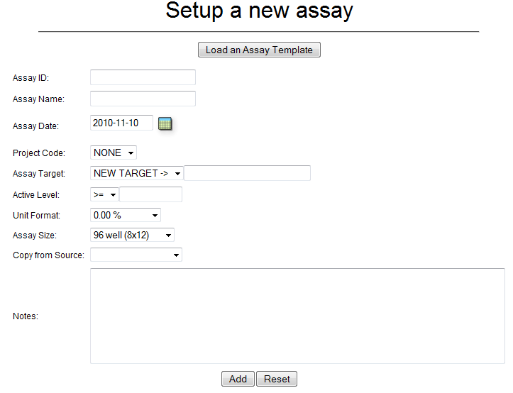

Ultimately, biological activity is the driving force for any natural products drug discovery effort. Therefore, proper management of biologically activity data is vital for any reporting or data-mining activities.
CYANOS stores bioassay data as two compontents, the bioassay parameters and the data itself. The bioassay parameters include the target, date performed, activity threshold, associated project, and any notes. The following two subsections will detail how to manage these basic paremeters of an assay.
The form to add a new assay can be accessed by the menu option Bioassays > Add New. This will open the Setup a New Assay form.
Use the form to set the basic parameters of the new assay.
| Assay ID | Globally unique alphanumeric ID for the new assay. |
| Assay Name | Descriptive name/label for the assay |
| Assay Date | Date the assay was perfomed. |
| Project Code | The project code associated with the assay. |
| Assay Target | The target, e.g. TB or trypsin, of the assay. Use the NEW TARGET -> option to specifiy a new target in the input field adjacent to the pull down field. |
| Active Level | Active threshold for this assay. |
| Unit Format | Formats used for displaying the activity data on the CYANOS web interface. |
| Size | The size of the assay plate. |
| Notes | Any notes or details to include with the assay record. |
The Load an Assay Template button allows one to load default values from a stored assay template. Assay templates can be created/modified using the Assay Protocols form, which is accessed via the Bioassays -> Manage Protocols menu item.
Once all the data is entered into the form, click the Add button to add the assay details to database.
Return to table of contentsBioassay records can be access via the Bioassays -> Browse Data menu item. Use the pull down menu(s) to select the assay of choice. The resulting Assay Data page allows one to view and edit the basic parameters of the bioassay. Click the Edit Values button to view the parameters in a form for editing. All attributes, except Assay ID, can be modified by this form.
Click the Update button to update the database record.
Return to table of contentsCurrently, bioassay data can only be uploaded into CYANOS using the Upload Bioassay Data form. This form can be accessed via the Bioassays -> Upload Data menu item. Prior to using the upload form, one must prepare the spread containing the bioassay data. Note: For simplicity and ease of use, one should create the bioassay first before uploading data into CYANOS, however it is possible to upload the data then add bioassay parameters later. The spreadsheet should have the following format. Please note that items in italics are optional.
| Assay ID | Strain ID | Location | Activity | Sample ID | Label | Concentration |
|---|---|---|---|---|---|---|
The Assay ID is the ID of the associated assay record. The Upload Data form does allow one to choose an assay for all records, thus it is not necessary to include this column in the spreadsheet. However, use of this field in the spreadsheet makes it is possible to include data from different assays and thus simplify uploading data from multiple assays.
The Strain ID is the associated strain ID of the assay data point and Location is the location within the plate for the data point, e.g. A1 or G12. The Activity values for each data point can be a single column of values or two columns of mean values and standard deviations. In either case, indefinite values, e.g. > 100 μg/mL, can be specified for the value or mean value. The Sample ID can be used to designate the serial number of the parent sample used for this assay. Note: Linking samples is required to link assay data with extracts, fractions, and isolated compounds. Therefore, it is a good practice to include the sample ID, if available. The Label can be used to designate a descriptive label for the sample assayed and the Concentration can be used to designate the concentration of the sample, if data reported was for a specific concentration.
The selection fields in the form are used to designate the proper columns in the spreadsheet.
Important Considerations. Assay data in CYANOS is tied to the assay (Assay ID) and the location within the assay, therefore it is possible to overwrite assay data by specifying the same assay ID and location of an existing data point. It is also important to note that CYANOS evaluates each row of the uploaded data independently in an add/replace fashion. Any assay locations missing from the spreadsheet that are present in the database will NOT be deleted or modified. Thus, it is possible to adjust individual or a subset of data points from a existing set of assay data without having to include those data points which did not change.
Attributes, e.g. Sample ID, Activity, Label, that are optional and set to SKIP ITEM in the parser will not be changed or modified by the parser if the data point currently exists in the database. Thus, it is possible to upload the format of an assay (Strain ID, Sample ID, Concentration, Label, Location) at one time then later add the activity data (Location, Strain ID, Activity). To aid this two-step upload, CYANOS allows one to download a comma separated values (CSV) spreadsheet of existing assay data via the Export assay data link adjacent to the Assay ID on the Assay Data page for the assay.
Return to table of contentsRequired permissions listed in this table denote the role and permission bit, in parenthesis. Actions in italics utilize global level permissions only.
| Action | Required Permission |
| Add a new assay | assay(Create) |
| Modify an assay | assay(Write) |
| Add assay data | assay(Write) |